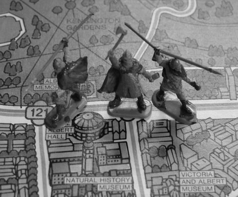

 |
FANTASY WARS (FW)ist ein Spielsystem, um Schlachten in einer Fantasy-Welt darzustellen. Das Spielsystem kann für jede Form der Darstellung genutzt werden. Ob nun mit Miniaturen, auf Hexfeldern oder im Stil von Risiko für 'area control' Spiele - FANTASY WARS ist flexibel und einfach. Für den Spielspaß zwischendurch, oder für Kampagnen, die mehrere Tische in Anspruch nehmen sollen.Spielidee: Jonas Rackl & Gerald Zabos |